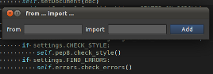
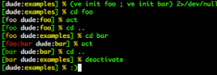
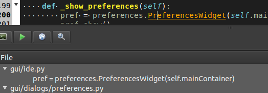

Features
-
Powerfull Code Editor

NINJA-IDE provides a complete code editor with highlighting for several languages, code completion, code assistant for: imports, navigation, etc. Also it is possible to extend the editor functionality using plugins.
-
Amazing Code Locator

This Feature allows quick and direct access to any file, function or class inside one of our projects by simply pressing a few keys. Pressing "Ctrl + K" we will see a popup over a text field, where you can type the name of what you want and done!
-
Display Manager

Provides support to use an embedded Python Console into the IDE, and load several plugin's widgets for multi-purposes.
-
Project Managment

NINJA-IDE allows to manage Python Project automatically, saving descriptive information about them and letting the user to perform file managment related task in the IDE itself.
-
Run Project and Files

With NINJA-IDE it is possible to run Python Project or any file opened in the Editor with just one click. It is also possible to render an HTML file loaded in the Editor in the IDE to see how the changes would look like in a browser.
-
Highly extensible

You can create a Plugin for several purposes and it can be integrated completely with the IDE, increasing the functionality available to improve assistance for projects development.
-
Errors and PEP8 Finder

Highlight Static and PEP8 errors in the document, you can also see that the files containing PEP8 errors are shown with an icon in the tab where the file is opened, and files containing code static errors are shown with a bug icon in that tab.
-
Import From Everywhere
When we are editing large files, what we would probably do to include modules is to scroll to the top of file, add our Imports and return again to where we were. NINJA-IDE allows us to avoid this situation with: "Imports from Everywhere".
-
Symbols Explorer

You can see all the functions, classes and attributes in the current file, grouped together under the structure that contains them, and go to the definition of each one with just one click.
-
Virtualenv Support
Support for virtualenv has been added, which can be specified in the project creation from NINJA-IDE or for an existing project in Project Properties.
-
Find In Files / Find Usages
Allows you to search one or more words, a regular expression, etc. recursively, also you have an option in the editor's contextual menu that allows you to find all the occurrences of a particular word from where the cursor is positioned.
-
And many more!!

Web Inspector, Code Navigation, Contextual Menu in Tabs to perform quick actions, Code Jumps, Breakpoints and Bookmarks Navigation implemented, Profile manager, and a lot more!.